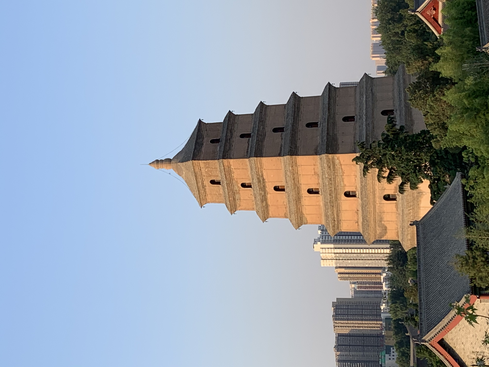

China is the world’s most populous country with a population of 1.44 billion people. It has quickly become the second largest economy in the word. And, it is the world’s third biggest country by territory. Key regions of China include: the North China Plain, the Loess Plateau, the Southeast Coast and Shanghai, the Yangzi Valley, the Sichuan Basin, Southwest Uplands, Xinjiang, Northeast (Manchuria), Qinghai and the Tibetan Plateau. Traditionally, China has recognized the distinctiveness of geographical regions, and some cities, such as Shanghai, Beijing, Tianjin, Chongqing, and Hong Kong, have special political and economic roles. The majority of people speak some variety of Mandarin Chinese as their first language, but there are several hundred languages in China.

On my family's trip to China, we had a lot of fun there. We did a lot of fun activities, ate many delicious foods, and we also visited very many famous landmarks such as: The Great Wall of China, the Forbidden City, the Temple of Heaven, the Bird's Nest, and the Giant Wild Goose Pagoda. We also visited our relatives living in China and toured all their houses. When we visited The Great Wall of China, we also got to ride in these cool vehicles that carried us onto the wall and back down that were connected to a wire. When we went to the Bird's Nest, we toured the entire stadium and we saw the field that the 2008 Olympics was played on! Also, cool sotyr, when we arrived in China, because the timezones were so different from the US, it was 3:00 AM and I didn't even feel tired at all!